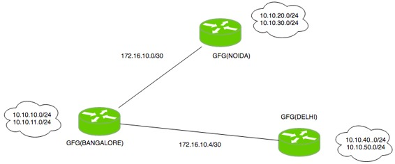
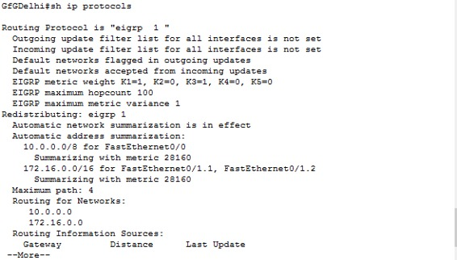
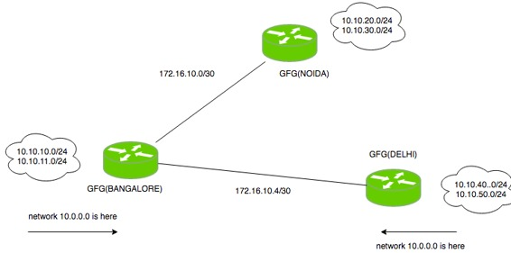

Prerequisite – EIGRP fundamentals
Enhanced Interior Gateway Routing Protocol (EIGRP) is a dynamic routing network layer Protocol which works on the protocol number 88. EIGRP supports classless routing, VLSM, route summarization, load balacing and many other useful features. It is a Cisco proprietary protocol, so all routers in a network that is running EIGRP must be Cisco routers but now EIGRP is moving towards becoming an open standard protocol.
EIGRP exchange messages for communication between the routers operating EIGRP.
Configuration –

There is small topology in which there are 3 routers (on which user will configure EIGRP) namely GfGNoida, GfGDelhi, GfGBangalore. As seen, GfGBangalore router has to advertise the networks 10.10.10.0/24, 10.10.11.0/24, 172.16.10.0/30, 172.16.10.4/30.
Therefore now configuring EIGRP for router GfGBangalore.
GfGB(config)#router eigrp 1 GfGB(config-router)#network 10.10.10.0 GfGB(config-router)#network 10.10.11.0 GfGB(config-router)#network 172.16.10.0 GfGB(config-router)#network 172.16.10.4
Here, first created an EIGRP instance by router eigrp 1command where 1 is the autonomous system number. Now, for configuring EIGRP for GfGDelhi router, the network to be advertised are 10.10.40.0/24, 10.10.50.0/24 and 172.16.10.4/30
GfGDelhi(config)#router eigrp 1 GfGDelhi(config-router)#network 172.16.10.4 GfGDelhi(config-router)#network 10.10.50.0 GfGDelhi(config-router)#network 10.10.40.0
Now, similarly configuring EIGRP for GfGNoida, the networks to be advertised are 10.10.20.0/24, 10.10.30.0/24, 172.16.10.0/30
GfGN(config)#router eigrp 1 GfGN(config-router)#network 172.16.10.0 GfGN(config-router)#network 10.10.20.0 GfGN(config-router)#network 10.10.30.0
This is a simple configuration in which user has to write the network I’d of the network to be advertised with network command.
Troubleshooting –
As configured EIGRP, user should see problems occurring in forming neighbourship between EIGRP operating routers. The neighbourship will not be formed if:
- the interface is configured as passive
- the k values doesn’t match
- the autonomous system number is different
- EIGRP authentication is misconfigured
- interface between devices are down
If in case, adjacency is up but the router doesn’t receive the network updates then these can be the following reasons:
- proper networks are not advertised
- ACL is applied on the interface
- auto summary command causes summarization of networks which are not needed
Now, observing all these things in our configured scenario, see that:
- the autonomous system is same on all routers (as configured 1).

- the default K values are used (10100) as shown in the above figure.
- no authentication is applied.
- the interfaces are up.
- Also, no ACL has been applied.
The problem occurring in this scenario is network updates are being summarized. Why?

Because auto-summary has been enabled. This is the most common problem occurs during configuration of EIGRP. By default the auto-summary command is enabled in EIGRP, therefore here the routes are summarized. Therefore the situation looks like the below image:

Therfore, user have to disable the auto-summary command on all routers.
GfGB(config-router)#no auto-summary
Similarly, on routers GfGDelhi and GfGN, no auto-summary commands will be configured.

Now, user can see that all the correct routes are exchanged (not the summarized routes).